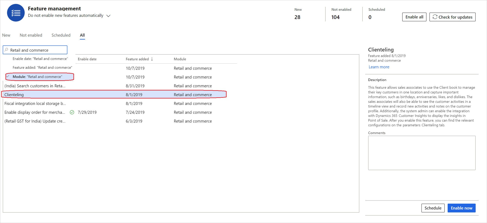
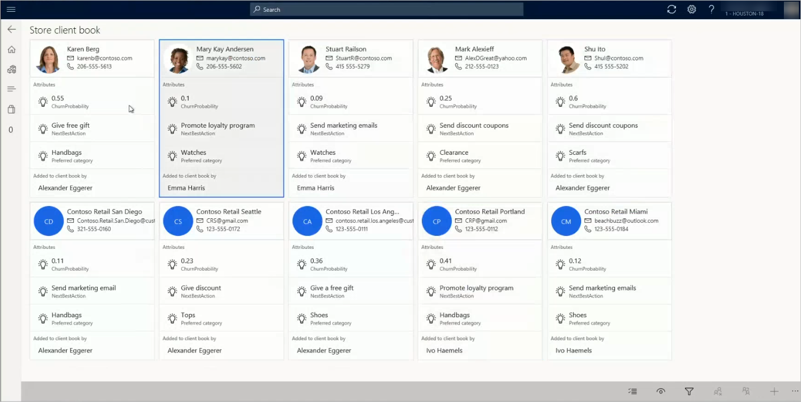

Übersicht zu Kundenaktionen
Important
Dynamics 365 Retail ist jetzt Dynamics 365 Commerce und bietet umfassende Handelsfunktionen für alle Kanäle – von E-Commerce über Shops bis hin zu Callcentern. Weitere Informationen zu diesen Änderungen finden Sie unter Microsoft Dynamics 365 Commerce.
Viele Einzelhändler, insbesondere der gehobene Fachhandel, möchten, dass ihre Verkäufer langfristige Beziehungen zu ihren Schlüsselkunden aufbauen. Von den Verkäufern wird erwartet, dass sie über Vorlieben und Abneigungen dieser Kunden, die Kaufhistorie, Produktpräferenzen und wichtige Daten wie Jubiläen und Geburtstage informiert sind. Mitarbeiter benötigen einen Ort, an dem sie diese Informationen erfassen und leicht finden können, wenn sie benötigt werden. Wenn diese Informationen in einer einzigen Ansicht verfügbar sind, können die Verkäufer problemlos Kunden ansprechen, die bestimmte Kriterien erfüllen. Sie können beispielsweise alle Kunden finden, die lieber Handtaschen kaufen, oder Kunden, bei denen eine wichtige Veranstaltung wie ein Geburtstag oder ein Jubiläum bevorsteht.
Kundenbuch
In Microsoft Dynamics 365 Commerce können Einzelhändler die Kundenbuchfunktionen verwenden, um Verkäufer beim Aufbau langfristiger Beziehungen zu ihren Schlüsselkunden zu unterstützen.
Das Kundenbuch enthält Debitorenkarten, auf denen die Kontaktinformationen für jeden Debitor angezeigt werden, sowie drei zusätzliche Eigenschaften, die vom Einzelhändler definiert und in Headquarters konfiguriert werden. Einzelhändler können die drei wichtigsten Dinge festlegen, die Verkäufer über Kunden wissen sollten. Ein Schmuckeinzelhändler möchte möglicherweise Daten wie Jahrestage oder Geburtstage einbeziehen, weil es sich bei diesen Daten um Anlässe handelt, bei denen mehr Schmuck gekauft wird. Entsprechend möchte ein Mode-Einzelhändler möglicherweise die bevorzugten Kaufinteressen und Marken des Kunden einbeziehen.
Anhand des Kundenbuchs können Verkäufer die Liste auch filtern, sodass nur die Kunden angezeigt werden, die bestimmte Kriterien erfüllen. Beispiel: Eine neue Schuhkollektion ist im Geschäft angekommen und ein Mitarbeiter möchte Kunden informieren, die gerne Schuhe kaufen möchten. In diesem Fall kann der Verkäufer das Kundenbuch filtern, um die entsprechenden Kunden zu suchen und dann weitere Aktionen durchzuführen.
Wenn Kunden aus irgendeinem Grund nicht mehr als Schlüsselkunden gelten und daher nicht mehr eng betreut werden sollten, können Verkäufer sie aus ihrem Kundenbuch entfernen.
Einige Einzelhändler möchten Kunden nicht auf der Verkäuferebene verwalten. Stattdessen möchten sie eine Liste der Schlüsselkunden auf Shopebene verwalten. Diese Einzelhändler können Debitoren über die Shopkundenbücher anzeigen. Mit dieser Option können Einzelhändler die Kunden aus den Kundenbüchern aller Verkäufer anzeigen, deren Adressbuch mit dem des aktuellen Shops übereinstimmt. Wenn ein Mitarbeiter in mehreren Filialen der juristischen Person arbeitet, zeigt das Kundenbuch auf diese Weise die Kunden aus all diesen Filialen an. Diese Funktionalität unterstützt zusätzliche Funktionen. Kunden können beispielsweise von einem Verkäufer zum anderen neu zugeordnet werden. Diese Funktion ist hilfreich, wenn Verkäufer versetzt werden oder das Unternehmen verlassen.
Jeder Vertriebsmitarbeiter kann über ein Kundenbuch pro juristische Person verfügen und seinem Kundenbuch einen oder mehrere Kunden hinzufügen. In Commerce kann derzeit jeder Kunde nur einem Kundenbuch hinzugefügt werden. Allerdings plant Microsoft, Funktionen hinzuzufügen, mit denen einzelne Kunden mehreren Kundenbüchern hinzugefügt werden können.
Note
Im Gegensatz zur Debitorensuche filtert das Kundenbuch Debitorendatensätze nicht basierend auf den Adressbüchern des Shops.
Aktivitäten und Notizen
Online-Kanäle bieten Einzelhändlern die Möglichkeit, sich über Debitorenpräferenzen zu informieren, ohne dass die Debitoren diese Informationen explizit angeben müssen. Im Gegensatz dazu teilen Debitoren, die mit Verkäufern im Shop interagieren, explizit Informationen über ihre Präferenzen mit. Leider können diese Informationen verloren gehen, nachdem der Verkauf erfolgt ist. Wenn diese Informationen jedoch erfasst werden, können Sie dazu beitragen, dass Einzelhändler Debitoren besser verstehen und daher bessere Empfehlungen geben und eine bessere Einkaufserfahrung bieten.
Um die wichtigen Informationen zu erfassen, die Debitoren freigeben, können Vertriebsmitarbeiter nicht nur die Attribute des Kundenbuchs verwenden, sondern auch die Funktionen für Aktivitäten und Notizen. Einzelhändler können Aktivitätstypen, z. B. Informationen zum Shopbesuch, E-Mail-Adresse, Telefonnummer und Termine, konfigurieren. Aktivitäten, die Verkäufer erstellen, können in einem Zeitachsenformat an der Verkaufsstelle angezeigt werden. Sie können auch auf der Registerkarte Aktivitäten auf der Seite Alle Debitoren > Allgemeines in den Headquarters angezeigt werden.
Verkäufer können Notizen verwenden, um allgemeine Debitoreninformationen zu erfassen, auf die vor jeder Interaktion verwiesen werden kann. Diese Notizen werden in Headquarters gespeichert und können im Debitorenprofil oder auf der Debitorendetailseite des Callcenters angezeigt werden.
Note
Derzeit können alle Notizen und Aktivitäten von jedem Verkäufer angezeigt werden, der für die juristische Person arbeitet und Debitorendetailseiten aufrufen kann. Notizen und Aktivitäten sind nicht auf den Verkäufer beschränkt, der einen Debitor dem Kundenbuch hinzugefügt hat.
Integration mit Dynamics 365 Customer Insights
Mithilfe der Anwendung Dynamics 365 Customer Insights können Einzelhändler Daten aus den verschiedenen Systemen zusammenführen, die Debitoren verwenden, um mit den Produkten des Einzelhändlers zu interagieren. Sie können diese Daten anschließend verwenden, um eine einzelne Ansicht des Debitors zu generieren und Einsichten zu gewinnen. Die Integration von Customer Insights in Commerce ermöglicht es Einzelhändlern, mindestens eine Maßnahme auszuwählen, die auf der Debitorenkarte im Kundenbuch angezeigt werden sollte. So können Einzelhändler die Daten in Customer Insights beispielsweise verwenden, um die „Abwanderungswahrscheinlichkeit“ für einen Debitoren zu berechnen und die „nächstbeste Aktion“ zu definieren. Wenn diese Werte als Kennzahlen definiert werden, können sie auf der Debitorenkarte angezeigt werden und zentrale Informationen zu den Vertriebsmitarbeitern bereitstellen. Weitere Informationen zu Customer Insights finden Sie in der Dokumentation zu Dynamics 365 Customer Insights. Weitere Informationen zu Kennzahlen finden Sie unter Kennzahlen.
Kundenaktionen einrichten
Um die Funktionen für Kundenaktionen in Ihrer Umgebung zu aktivieren, führen Sie die folgenden Schritte aus.
Filtern Sie im Arbeitsbereich Funktionsverwaltung die Funktionen nach dem Modul Einzelhandel und Handel.

Aktivieren Sie die Funktion Kundenaktionen, indem Sie Jetzt aktivieren auswählen.
Wählen Sie auf der Seite Commerce-Parameter auf der Registerkarte Nummernkreis die Zeile Kundenbuchbezeichner aus. Wählen Sie dann im Feld Nummernkreiscode einen Nummernkreis aus. Das System verwendet diesen Nummernkreis, um Kundenbüchern eine ID zuzuweisen.
Wählen Sie Speichern.
Erstellen Sie eine neue Attributgruppe, die die Attribute enthält, die Sie für Debitoren erfassen möchten, die in den Kundenbüchern verwaltet werden. Weitere Anweisungen finden Sie unter Attribute und Attributgruppen.
- Definieren Sie die erforderlichen Attribute als Kann verfeinert werden. Verkäufer können ihr Kundenbuch dann anhand dieser Attribute filtern.
- Legen Sie die Anzeigereihenfolge für diese Attribute fest. Dieser Anzeigereihenfolge bestimmt, welche Attribute auf der Debitorenkarte im Kundenbuch angezeigt werden sollen. Die Anzeigereihenfolge 1 wird als höher angesehen als die Anzeigereihenfolge 2. Daher wird das Attribut mit der Anzeigereihenfolge 1 vor dem Attribut mit der Anzeigereihenfolge 2 angezeigt.
Note
Sie können Customer Insights über dieselbe Seite verfügbar machen. Zu Authentifizierungszwecken müssen jedoch eine Kennung und ein Geheimnis für die Azure-Anwendung erstellt werden. (Weitere Informationen zu den Anforderungen, finden Sie im Abschnitt Integration von Customer Insights in Commerce aktivieren weiter unten in diesem Thema). Wenn Customer Insights aktiviert ist und Sie eine oder mehrere Kennzahlen auswählen, die auf der Debitorenkarte angezeigt werden sollen, werden diese Kennzahlen zuerst angezeigt. Als Nächstes werden Kundenbuchattributgruppen basierend auf der Anzeigereihenfolge angezeigt. Wenn Sie beispielsweise zwei Kennzahlen aus Customer Insights auswählen, werden diese beiden Kennzahlen und ein Kundenbuchattribut auf der Debitorenkarte angezeigt. (Das angezeigte Kundenbuchattribut ist das Attribut mit der höchsten Anzeigereihenfolge).
Wählen Sie auf der Seite Commerce-Parameter auf der Registerkarte Kundenaktionen in der Kundenbuchattributgruppe die Attributgruppe aus, die Sie soeben erstellt haben.

Um die Aktivitäten aufzuzeichnen die am POS ausgeführt werden, definieren Sie die Aktivitätstypen der Seite auf Aktivitätstypen (Retail und Commerce > Debitoren >-Aktivitätstypen).
Note
Aktivitätstypen werden von der Commerce-Skalierungseinheit abgerufen, wenn ein Echtzeitanruf zum ersten Mal ausgeführt wird. Nachdem die Aktivitäten abgerufen wurden, werden sie für einige Stunden zwischengespeichert. Wenn Sie die Aktivitätstypen ändern, müssen Sie warten, bis der Cache nicht mehr gültig ist. Alternativ können Sie für Nicht-Produktionsumgebungen den Dienst der Commerce-Skalierungseinheit neu starten.
Fügen Sie dem entsprechenden POS-Bildschirmlayout zwei Schaltflächen hinzu, damit Verkäufer ihr eigenes Kundenbuch anzeigen und speichern können. (Shopkundenbücher enthalten Kunden aus allen Kundenbüchern sämtlicher Verkäufer, die ein Adressbuch gemeinsam mit dem Shop nutzen.) Die entsprechenden Vorgänge lauten Debitoren im Kundenbuch anzeigen und Debitoren über die Shopkundenbücher anzeigen. Es sind drei zusätzliche Vorgänge im Zusammenhang mit Kundenbüchern verfügbar. Anhand dieser Vorgänge wird festgelegt, welche Verkäufer Debitoren aus dem Kundenbuch hinzufügen, entfernen und neu zuweisen können. Diese lauten Debitor zu Kundenbuch hinzufügen, Debitoren aus Kundenbuch entfernen bzw. Debitoren einem Kundenbuch neu zuweisen.
Führen Sie die folgenden Verteilungs-Zeitplaneinzelvorgänge aus: 1040, 1150, 1110 und 1090.
Nach Abschluss dieses Verfahrens können Verkäufer die Debitorendetailseite am POS öffnen und ihrem Kundenbuch Debitoren hinzufügen, Aktivitäten und Notizen für Debitoren hinzufügen und auf Debitoren abzielen, indem sie das Kundenbuch anhand von Debitoren- und Kundenbuchattributen filtern. Die folgende Abbildung zeigt ein Beispiel für ein Kundenbuch.

Integration von Customer Insights in Commerce aktivieren
Um die Integration von Customer Insights in Commerce zu aktivieren, müssen Sie sicherstellen, dass Sie über eine aktive Instanz von Customer Insights im Mandanten verfügen, in dem Commerce bereitgestellt wird. Sie benötigen außerdem ein Azure Active Directory (Azure AD)-Benutzerkonto mit einem Azure-Abonnement.
Führen Sie die folgenden Schritte aus, um die Integration einzurichten.
Registrieren Sie im Azure-Portal eine Anwendung. Diese Anwendung dient zur Authentifizierung bei Customer Insights. Weitere Anweisungen finden Sie unter Schnellstart: Eine Anwendung bei der Microsoft Identity Platform registrieren.
Generieren Sie ein Geheimnis für die Anwendung. Notieren Sie das Geheimnis, und bewahren Sie es an einem sicheren Ort auf, da Sie es zu einem späteren Zeitpunkt benötigen. Wählen Sie außerdem die Ablaufdauer für das Geheimnis aus.
Important
Unternehmen Sie entsprechende Schritte, damit sie nicht vergessen, das Geheimnis zu ändern, bevor es abläuft. Andernfalls wird die Integration unerwartet beendet.
Erstellen Sie einen Azure-Schlüsseltresor, und speichern Sie das Anwendungsgeheimnis. Weitere Anweisungen finden Sie unter Schnellstart: Ein Geheimnis aus Azure Key Vault über das Azure-Portal festlegen und abrufen.
Aktivieren Sie den Zugriff auf Azure Key Vault über Commerce. Um diesen Schritt auszuführen, benötigen Sie eine Anwendungs-ID und ein Geheimnis. Die Anwendung kann mit der identisch sein, die Sie in Schritt 1 erstellt haben. Es kann auch eine neue Anwendung sein. (Mit anderen Worten, Sie können die Anwendung, die Sie in Schritt 1 erstellt haben, sowohl für den Zugriff auf Key Vault als auch für den Zugriff auf den Customer Insights-Dienst verwenden, oder Sie können eine eindeutige Anwendung für jeden Zugriffstyp erstellen.) Weitere Anweisungen finden Sie unter Anmeldeinformationen für Dienstprinzipale in Key Vault von Azure Stack speichern.
Wechseln Sie in Headquarters zu Systemverwaltung > Einrichtung > Key Vault-Parameter, und geben Sie die erforderlichen Informationen für Key Vault ein. Geben Sie anschließend im Feld Key Vault-Client die Anwendungskennung ein, die Sie in Schritt 4 verwendet haben, damit Commerce auf die Geheimnisse in Vault Key zugreifen kann.
Um die in Schritt 1 erstellte Anwendung der Liste der sicheren Anwendungen (auch als Sichere Liste bezeichnet) hinzuzufügen, wechseln Sie zu Customer Insights, und gewähren Sie Anzeigezugriff auf die Anwendung. Weitere Anweisungen finden Sie unter Berechtigungen.
Führen Sie in Commerce auf der Seite Commerce-Parameter, auf der Registerkarte Kundenaktionen des Inforegisters Dynamics 365 Customer Insights die folgenden Schritte aus:
- Geben Sie im Feld Anwendungskennung die Anwendungskennung ein, die Sie in Schritt 1 verwendet haben.
- Geben Sie im Feld Geheimnisname den Namen des Key Vault-Geheimnisses ein, das Sie in Schritt 5 erstellt haben.
- Legen Sie die Option Customer Insights aktivieren auf Ja fest. Wenn die Einrichtung aus irgendeinem Grund nicht erfolgreich ausgeführt werden kann, wird eine Fehlermeldung angezeigt und diese Option auf Nein gesetzt.
- Sie können über mehrere Umgebungen in Customer Insights verfügen, z. B. Test- und Produktionsumgebungen. Geben Sie im Feld Umgebungsinstanzkennung die entsprechenden Umgebung ein.
- Geben Sie im Feld Alternative Debitorkennung die Eigenschaft in Customer Insights ein, die der Debitorenkontonummer zugeordnet ist. (In Commerce entspricht die Debitorenkontonummer der Debitorenkennung.)
- Die drei verbleibenden Eigenschaften sind die Kennzahlen, die auf der Debitorenkarte im Kundenbuch angezeigt werden. Sie können bis zu drei Kennzahlen auswählen, die auf der Debitorenkarte angezeigt werden sollen. (Sie müssen jedoch keine Kennzahlen auswählen.) Wie oben angegeben, zeigt das System zuerst diese Werte und dann die Werte für Kundenbuchattributgruppe an.